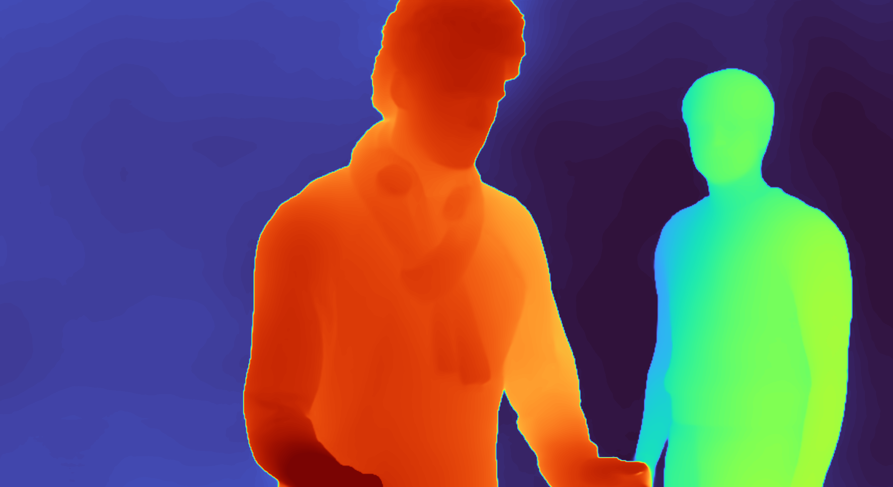
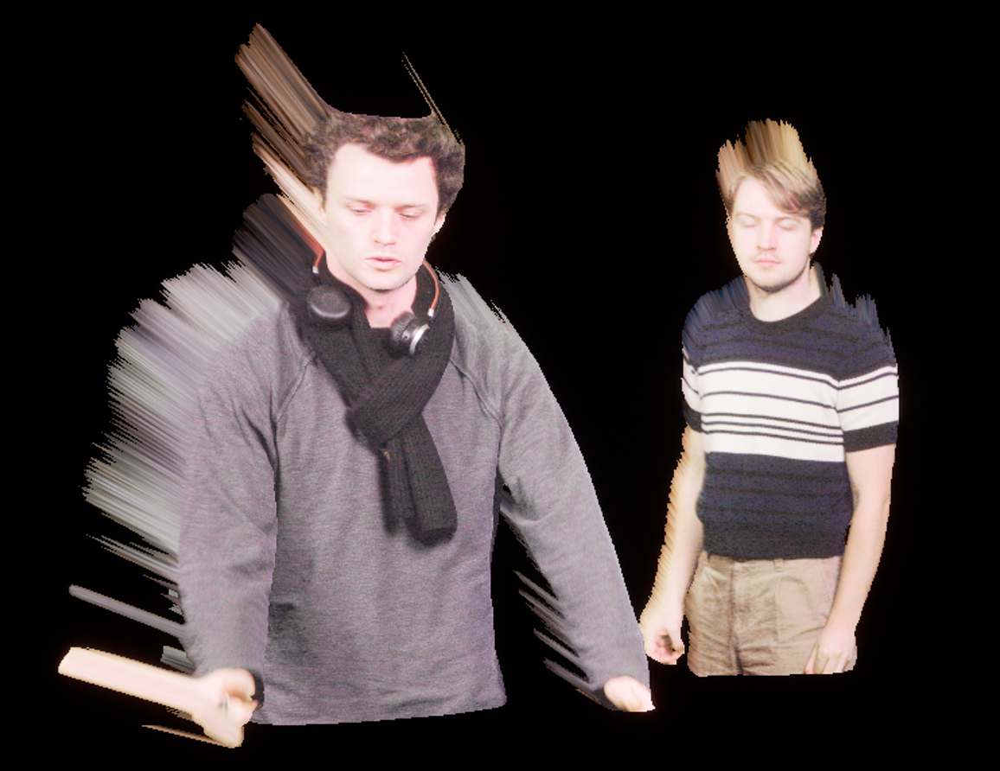
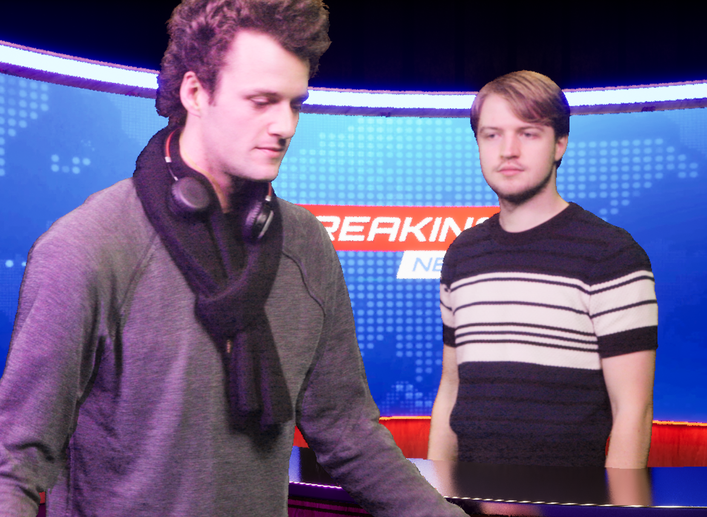

Virtual Production at Notre Dame Studios
Lead Software Engineer
Pitched and built an on-set virtual production studio from the ground up using UE5. I periodically presented live demonstrations of the system to the Office of Digital Learning and the Acting Vice President for Academic and Community Technology Experience at Notre Dame.
Implemented a real-time machine learning pipeline directly integrated into UE5 with a blueprint wrapper library for non-technical users. Also designed and built a real-time machine learning pipeline using Blackmagic Design's Decklink capture and playback cards and Libtorch to offload heavier models with a 3.34x performance improvement before optimization.
Skills: C++, UE5, Blueprints, Libtorch, Decklink, OpenCV
Coordinated a small team building technical and artistic components in UE5.
Updates
Updates here are shown in reverse chronological order
Update 3
Built a offline rendering pipeline for compositing using depth maps and re-lighting techniques. Depth maps generated by modified video-depth-anything pipelines to output raw 32-bit .EXR image sequences while preserving the uniform depth across the entire sequence.
Geometry was generated using geometry nodes in Blender then exported to UE5 as a .usd animation. Source lighting was baked from an HDRI using Cycles in Blender then imported into UE5 as an image sequence. The baked lighting was divided out of the original footage to achieve a "de-lit" equivalent footage in a shader inside UE5. The de-lit footage was re-lit by the UE5 scene including reflections and shadows.
The original depth map was generated using Video Depth Anything modified to export 32-bit raw depth estimations as .exr image sequences.

After the depth maps have been generated, they were converted into geometry using Geometry Nodes in Blender. Each pixel was scaled away from the camera origin such that from the camera's perspective the pixel does not change location. The geometry was then exported as a .USD geometry cache and sent to UE5.

In Blender, a HDRI of the studio was used to bake the original lighting on the geometry so it could be removed once the the geometry was imported into UE5.
From the camera's perspective in UE5, the footage looks like the original footage, but since it is actual geometry it reflects the lighting on the scene.
The geometry with a light moving in front of it
Finally, the geometry gets placed in a UE5 scene. Since it is actual geometry, it supports lighting, reflection, and placing different sections of the footage at different depths in the scene.

In this example, James is behind the desk, and the desk includes the his reflection on the surface.
Update 2
Built a news studio set. Implemented custom blueprints for lighting using rect lights and splines to better use the strengths of megalights for scenes with many light sources.
Update 1
Initial work on the project primarily focused on creating interactive elements that can be used in real-time by the talent without requiring input from someone else. This gives the talent more control over what they are doing and lowers the staffing requirements per scene, allowing smaller teams to produce interactive content.